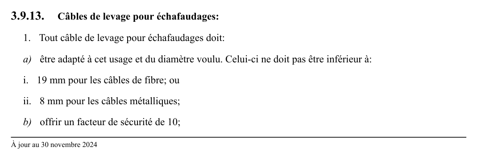

art-3.9.13-CSTC : câbles de levage pour échafaudages
Câbles de levage pour échafaudages: 1. Tout câble de levage pour échafaudages doit: a) être adapté à cet usage et du diamètre voulu. Celui-ci ne doit pas être inférieur à: i. 19 mm pour les câbles de fibre; ou ii. 8 mm pour les câbles métalliques;
🌐 LegisQuébec · 📄 PDF officiel
Texte officiel
Câbles de levage pour échafaudages:
1. Tout câble de levage pour échafaudages doit:
a) être adapté à cet usage et du diamètre voulu. Celui-ci ne doit pas être inférieur à:
i. 19 mm pour les câbles de fibre; ou
ii. 8 mm pour les câbles métalliques;
b) offrir un facteur de sécurité de 10;
c) être pourvu des cosses appropriées lorsqu’il est épissé en oeillets ou anneaux. Si l’on utilise des serre- câbles, ils doivent être de dimensions correspondant au diamètre du câble métallique et disposés de façon que la selle se trouve du côté du brin de travail;
d) être ligaturé à ses extrémités pour empêcher le décommettage des torons;
e) être protégé contre les saillies de l’édifice;
f) être protégé des substances corrosives s’il est utilisé à proximité;
g) être remisé dans un endroit frais, au sec et à l’abri des vapeurs chimiques ou corrosives;
h) s’il est utilisé avec un appareil de levage à tambour à friction, être assez long pour rejoindre le sol ou être empêché de sortir de l’appareil de levage en repliant le bout libre autour d’une cosse et l’attachant à l’aide d’un serre-câble.
Cette dernière méthode doit être utilisée pour un travail au-dessus d’un plan d’eau ou d’un cours d’eau; et
i) s’il est utilisé avec un appareil de levage à tambour à enroulement, être fixé au tambour avec une attache d’une résistance minimale égale à 80% de la résistance à la rupture du câble de levage.
2. Tout câble de levage en fibre:
a) ne peut être utilisé dans l’un ou l’autre des cas suivants:
i. lorsque les points de suspension sont à plus de 30 m du sol;
ii. sur les tambours de treuil;
iii. dans le voisinage de substances corrosives ou chimiques à moins d’avoir reçu un traitement contre ces substances;
b) ne doit pas frotter sur des surfaces abrasives;
c) doit être tenu en bon état en:
i. le faisant sécher; et
ii. le protégeant contre le gel; et
d) doit être remplacé après 2 ans de service ou avant si sa surface est devenue pelucheuse et si les fibres de torons sont décolorées ou noircies et commencent à se désagréger en formant une sorte de poussière blanchâtre.
3. Un câble de levage en fibre synthétique peut être utilisé à la place d’un câble de fibre à condition qu’il réponde aux mêmes exigences et qu’il offre une résistance équivalente.
4. Tout câble de levage métallique doit être:
a) conforme aux règles du manuel «Gréage et levage - Guide de sécurité» de la Construction Safety Association of Ontario, traduit par la Commission des normes, de l’équité, de la santé et de la sécurité du travail et publié par les Publications du Québec;
b) composé d’au moins 6 torons de 19 fils;
c) muni d’une âme de chanvre ou d’une âme flexible équivalente si le câble est enroulé en une seule couche sur le tambour de levage ou d’une âme d’acier dans les autres cas; et
d) tenu en bon état en:
i. suivant toutes les instructions du fabricant;
ii. le manoeuvrant de façon à éviter toute coque;
iii. le lubrifiant souvent pour lui conserver sa souplesse et le protéger de la rouille; et
iv. l’utilisant seulement sur des poulies ou des tambours dont les gorges sont lisses, sans aspérité.
5. A moins qu’un essai ne démontre qu’en aucun des points du câble la charge de rupture n’est diminuée à moins de 90% de la charge originale, le câble de levage doit être remplacé si:
a) 4% des fils composant le câble sont cassés dans un toron, sur un pas de câblage, soit sur une longueur d’environ 6 fois 1/2 le diamètre du câble s’il est utilisé sur un tambour à enroulement, ou 2% sur un tambour à friction;
b) le diamètre original, mesuré sur le câble non tendu, a diminué de:
i. 0,8 mm pour des câbles de 8 mm à 15 mm de diamètre; ou
ii. 1,2 mm pour des câbles de 15 mm à 25 mm de diamètre;
c) l’ensemble des fils extérieurs présente une usure supérieure à 50% de leur diamètre;
d) la corrosion est plus que superficielle.
6. Tout câble de levage en service ne doit pas traîner sur le sol, mais être gardé dans un récipient.
Texte de l’article 3.9.13 CSTC, extrait de la couche texte du PDF officiel (page 68), sans OCR ni retouche. La capture ci-dessous et le PDF font foi.
{kind=link}

Toucher l'image pour l'agrandir🔗 CSTC.pdf : page 68 · texte à jour au 30 novembre 2024
📚 Source légale : R.R.Q., 1981, c. S-2.1, r. 6, a. 3.9.13; D. 329-94, a. 45; D. 393-2011, a. 10; D. 513-2015, a. 4. · LégisQuébec
Voir aussi
- art. 3.9.12
- art. 3.9.14
- ⚖️ Loi habilitante : LSST
- ↑ Section 3 : Chantiers de construction
Pages qui pointent ici (3)
- art-3.9.12-CSTC : examens Recueil législatif
- art-3.9.14-CSTC : utilisation Recueil législatif
- CSTC : Section 3 : Chantiers de construction Recueil législatif